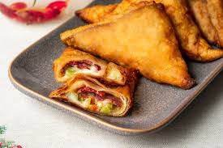

Paçanga Böreği
Malzemeler
3 adet yufka (dörde bölünmüş)
100 gram kaşar peyniri (rendelenmiş)
80 gram çemensiz pastırma (doğranmış
1 adet domates (kabukları soyulmuş, doğranmış)
2 adet yeşil biber (doğranmış)
Kızartmak için:
2 su bardağı ayçiçek yağı
Hazırlanışı
Paçanga böreği yapımı için önce yufkaları üst üste serin. Ardından, her bir yufkayı dikkatlice dört eşit parçaya bölün ve böylece sekiz üçgen yufka parçası elde edin.
Çemensiz ya da tercihe göre yemeklik pastırmayı küçük parçalar halinde kesin. Kaşar peynirini rendeleyin.
Kabuğunu soyduğunuz domatesleri küçük küpler halinde doğrayın. Yeşil biberleri halka şeklinde doğrayın.
Hazırladığınız pastırma, kaşar peyniri, domates ve biber karışımını bir kasede iyice karıştırın.
Üçgen yufka parçalarını mutfak tezgahının üzerine açın.
Her üçgen yufka parçasının geniş kısmına, karışımınızdan yaklaşık 1-2 yemek kaşığı ekleyin. İlk olarak yufkanın kenarlarını içeri doğru katlayın, ardından rulo şeklinde sıkıca sarın. Rulo sonunda, yufkanın ucunu suyla ıslatıp kapatın.
Ayçiçek yağını derin bir tavada kızdırın. Hazırladığınız paçanga böreklerini kızgın yağda altın rengi olana kadar kızartın.
Fazla yağını bırakmaları için kağıt havlu serili bir servis tabağında 2-3 dakika kadar beklettikten sonra, paçanga böreklerinizi sıcak olarak servis edin. Afiyet olsun.